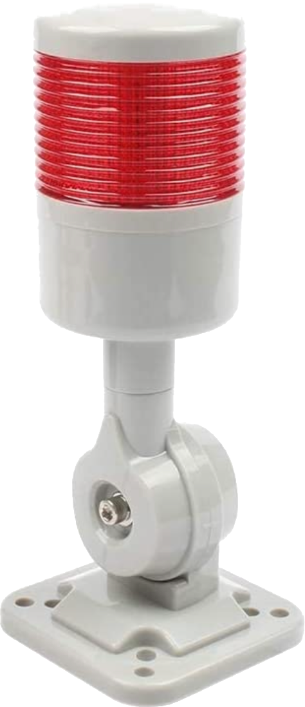
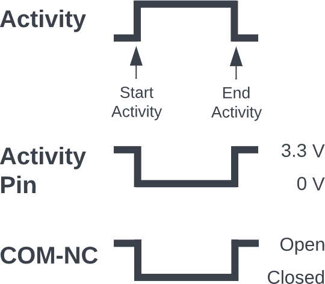

Library
|
|
|
Library |
|

Signal Light When using certain functions (such as Sync and MultiSync), the final pass can take quite a long time -- many hours is not uncommon. This function was requested so that a signal light can indicate when the activity is still underway. The idea was to have a light (such as the one to the left) lit when activity is underway, and not lit when the activity has stopped. This allows the operator to walk away from the machine when using these long-running operations, and monitor the activity periodically by glancing over to the machine to identify if the activity has stopped. How It Works

Activity Pin Timing
The activity diagram on the right shows the timings. When an activity is initiated on the Nextion touch screen (the top line), the Teensy will take the output for the selected pin from 3.3 VDC to 0 VDC (the second line). When that activity is completed, the Teensy will take the output for the selected pin from 0 VDC back up to 3.3 VDC. When that activity is completed (e.g., when using Sync or MultiSync) or stopped by the user, the Teensy will take the output for the selected pin from 0 VDC back up to 3.3 VDC. This output is then used to switch a relay. Identifying the Pin Used Using the Config More panel, a pin is identified for this use (which matches the one wired for this use).
| |
|
Wiring The Components The switching side of the relay (left side in the picture to the right) needs to be connected to the printed circuit board.
The switched side of the relay (right side in the picture to the right) needs to be connected to the power supply for the signal lamp.
| |
|
Parts
|
| About us |
Questions or comments? Contact us at
ColvinTools@Gmail.com |
Disclaimers |